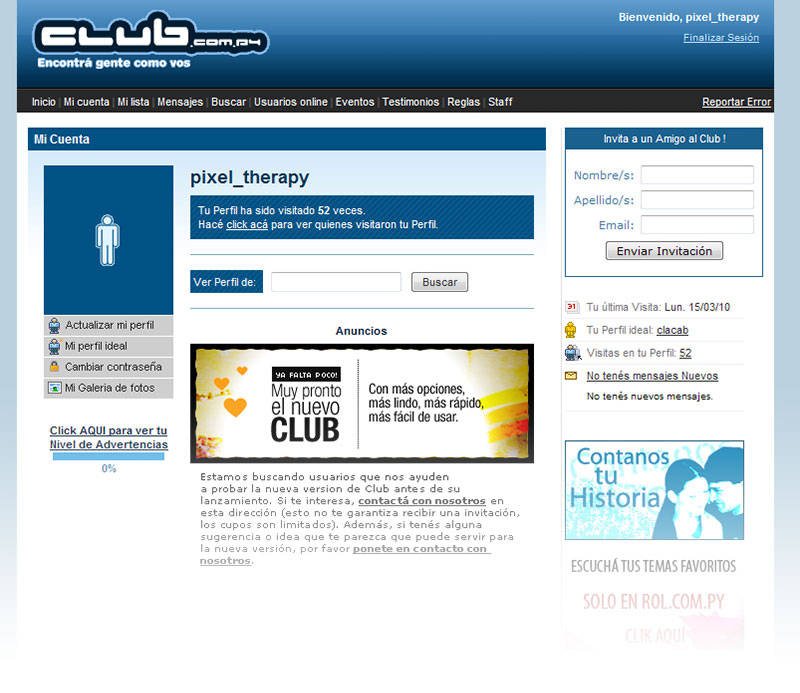
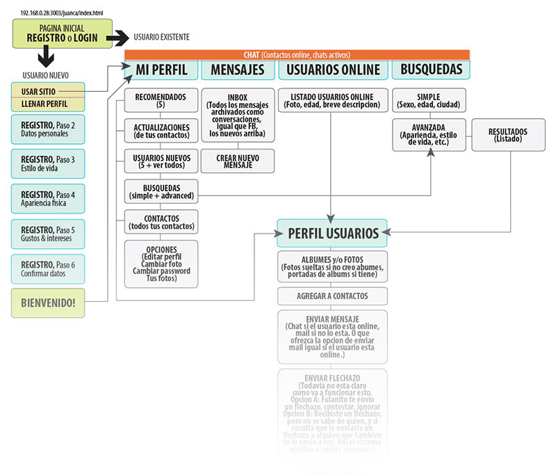
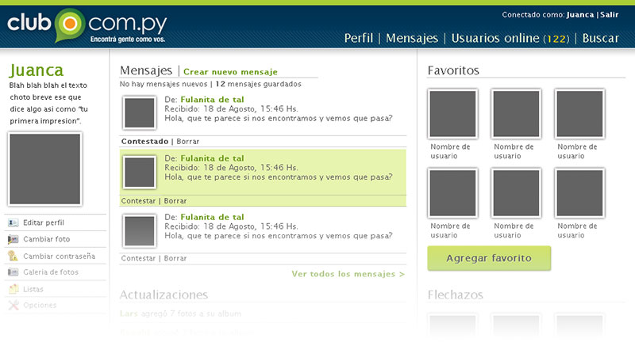
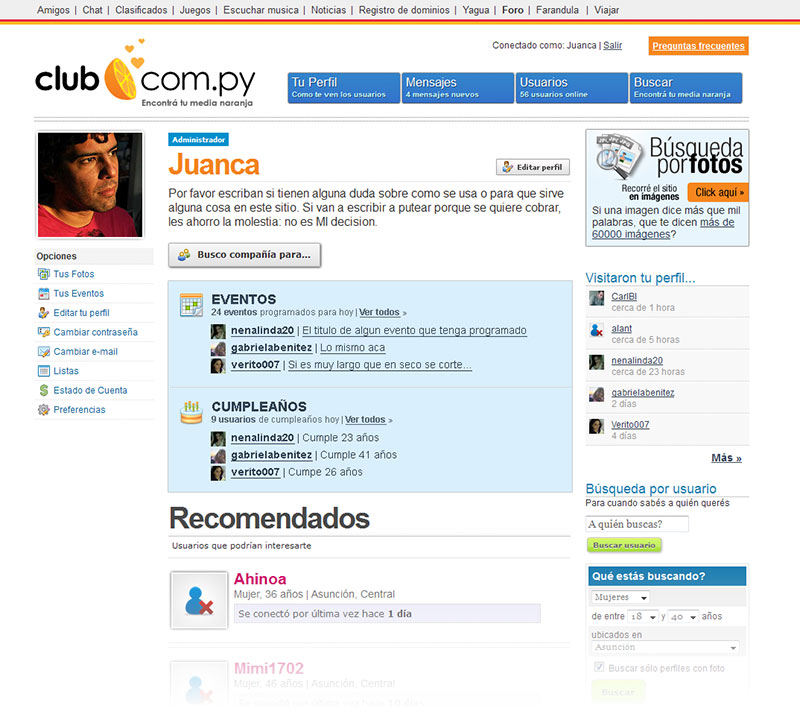
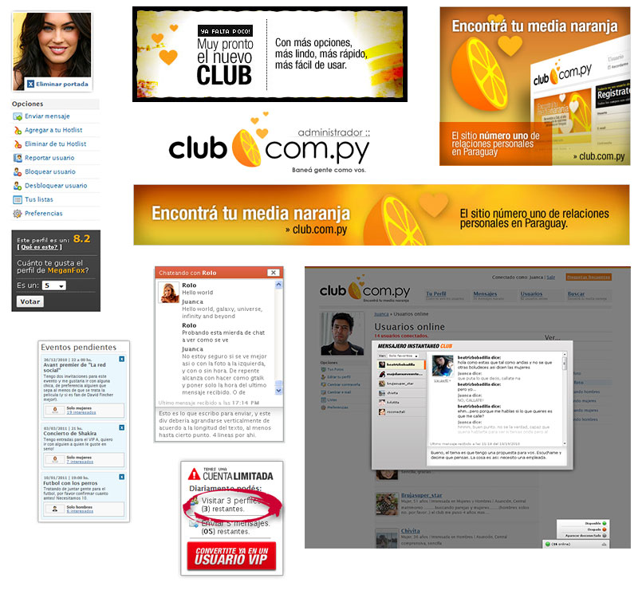

Concepto, diseño & HTML / CSS. Concepto & programación: Augusto Ruibal.
Así es aproximadamente como se veia el sitio cuando me encomendaron rediseñarlo. No estaba mal, pero quizás se veía un poco noventoso (en el 2010), y en cuanto a funcionalidad había mucho que mejorar.
Este fue un primer intento por organizarme, establecer la estructura, ordenar las ideas.
Una vez definida aproximadamente la estructura del sitio, empecé por lo primero: el logo. El anterior no era necesariamente feo, pero esta era una buena oportunidad para cambiarlo y renovar toda la imágen. Después de algunos idas y vueltas, esto fue lo que quedó.
Ya con un logo (más o menos) definido, empecé a acomodar los distintos elementos del sitio en un bosquejo más bien crudo, para hacerme al menos una idea de todo lo que tendriamos, y de dónde iría cada cosa.
En algún momento se decidió probar con el slogan "Encontrá tu media naranja". Tomando eso como punto de partida, y aprovechando que contaba con un talentoso ilustrador como José Pedersen trabajando ahí nomas, le pedí que me hiciera un logo más propicio. Este fue el resultado, y con un par de ligeros cambios (tipografía, slogan) este es el logo que se usó y todavia se usa.
Finalmente, con todas las piezas en su lugar, este fue el resultado.
A pesar de como acabó (resumiendo: se empezó a cobrar por el acceso y el sitio murió), trabajar en este sitio fue siempre interesante. Es lindo trabajar en algo que no sólo va a usar un montón de gente sino que además va a ser útil para algo. Durante varios meses trabajé casi exclusivamente en esto, y aún después del lanzamiento del sitio seguimos agregando features nuevos, mejorando, cambiando, optimizando, probando. Estos son retazos gráficos de algunas de esas pruebas.
